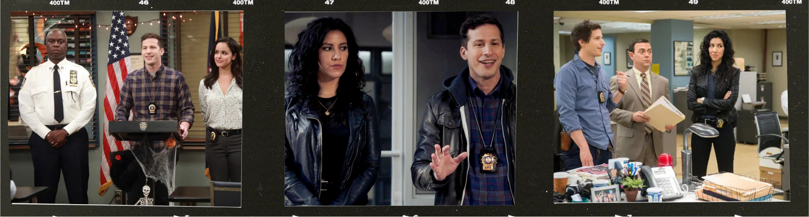
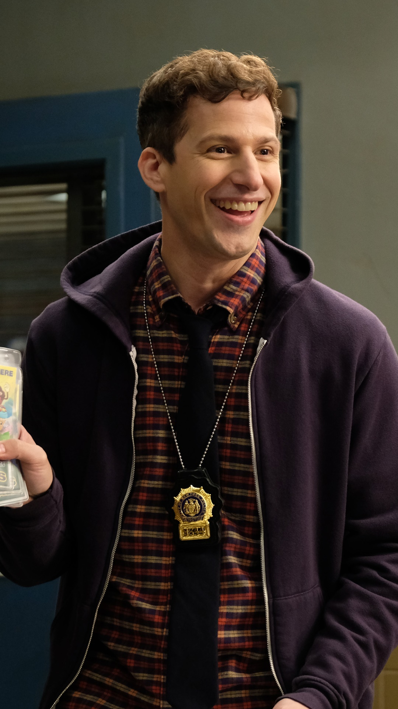
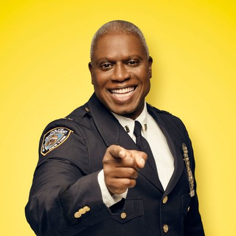
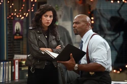

PRODUCTIONS
BROOKLYN 99

PLOT
How can the worst police station in New York City become the most popular precinct?
MY FAVORITE CHARACTER
- Name : Jake Peralta
- Age : 38
- Nationality : American

KEY TRAITS
- Charming & Immature : Loves jokes, pranks, and Die Hard.
- Brilliant Detective : Exceptional instincts and unconventional methods.
- Loyal & Compassionate : Deeply cares for friends and colleagues.
- Growth-Oriented : Matures over time, balancing humor with responsibility.
MAIN INTERACTIONS

Captain Raymond Holt
Captain Raymond Holt is the stoic and methodical leader of the 99th precinct. As the first openly gay and Black NYPD captain, he is a trailblazer who balances professionalism with a subtle sense of humor. Despite his serious demeanor, he deeply cares for his team and acts as a mentor and father figure to Jake Peralta.
Amy Santiago
Amy Santiago is an ambitious and highly organized detective with a passion for rules and a drive to succeed. She’s competitive, often seeking Captain Holt’s approval, and her relationship with Jake evolves from friendly rivalry to a loving partnership, culminating in marriage.
Charles Boyle
Charles Boyle is Jake Peralta’s loyal and supportive best friend. Known for his quirky personality and love of gourmet food, Charles often provides comic relief. Despite his awkwardness, he is a dedicated detective and values his relationships deeply, especially his friendship with Jake.

Terry Jeffords
Terry Jeffords is the muscular and kind-hearted sergeant of the 99th precinct. He’s a loving father to three daughters and often struggles with balancing his protective instincts with his duty as a leader. His nurturing personality contrasts humorously with his intimidating physical presence.
An Extract !
This is a cool extract of the series where you can see the most importants characters in it.